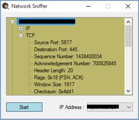
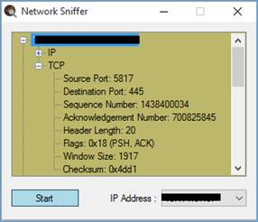

How to read IP header and its TCP header from RAW socket packet

How to read IP header and its associated TCP header from a RAW network packet
Introduction
The C# sample code developed in .NET Framework 4.0 would demonstrate a network sniffer sample that can parse IP, TCP, UDP, and DNS packets. It's a three step process as mentioned below:
1. Getting a list of IP addresses of the local machine using IPHostEntry and append the address list to a Combobox control for selecting a particular IP address to start capturing the packets.
2. After all the above operations have been completed a call to IOControl method has been made to capture all incoming and outgoing packets on the particular interface.
3.
Finally, MemoryStream class has been used to get the byte stream and its content is parsed.
Running the Sample
Step 1: Open the "NetworkSniffer.sln" file using VS 2010 using alleviated mode.
Step 2: Build the code by pressing "Ctrl+ Shift+ B" key combination.
Step 3: Execute the code either by clicking the F5 button or Ctrl + F5.
 

Using the Code
Below are the code snippets that parses the incoming packets and extracts the data based upon the protocol being carried by the IP datagram.
ParseData() function
- C# code snippet -
/// <summary>
/// This function parses the incoming packets and extracts the data based upon
/// the protocol being carried by the IP datagram.
/// </summary>
/// <param name="byteData">Incoming bytes</param>
/// <param name="nReceived">The number of bytes received</param>
private void ParseData(byte[] byteData, int nReceived)
{
TreeNode rootNode = new TreeNode();
// Since all protocol packets are encapsulated in the IP datagram
// so we start by parsing the IP header and see what protocol data
// is being carried by it.
IpHeader ipHeader = new IpHeader(byteData, nReceived);
TreeNode ipNode = MakeIPTreeNode(ipHeader);
rootNode.Nodes.Add(ipNode);
// Now according to the protocol being carried by the IP datagram we parse
// the data field of the datagram.
switch (ipHeader.ProtocolType)
{
case Protocol.TCP: TcpHeader tcpHeader = new TcpHeader(ipHeader.Data,
ipHeader.MessageLength);
TreeNode tcpNode = MakeTCPTreeNode(tcpHeader);
rootNode.Nodes.Add(tcpNode);
// If the port is equal to 53 then the underlying protocol is DNS.
// Note: DNS can use either TCP or UDP hence checking is done twice.
if (tcpHeader.DestinationPort == "53" ||
tcpHeader.SourcePort == "53")
{
TreeNode dnsNode = MakeDNSTreeNode(tcpHeader.Data,
(int)tcpHeader.MessageLength);
rootNode.Nodes.Add(dnsNode);
}
break;
case Protocol.UDP: UdpHeader udpHeader = new UdpHeader(ipHeader.Data,
(int)ipHeader.MessageLength);
TreeNode udpNode = MakeUDPTreeNode(udpHeader);
rootNode.Nodes.Add(udpNode);
// If the port is equal to 53 then the underlying protocol is DNS.
// Note: DNS can use either TCP or UDP, thats the reason
// why the checking has been done twice.
if (udpHeader.DestinationPort == "53" ||
udpHeader.SourcePort == "53")
{
TreeNode dnsNode = MakeDNSTreeNode(udpHeader.Data,
Convert.ToInt32(udpHeader.Length) - 8);
rootNode.Nodes.Add(dnsNode);
}
break;
case Protocol.Unknown:
break;
}
AddTreeNode addTreeNode = new AddTreeNode(OnAddTreeNode);
rootNode.Text = ipHeader.SourceAddress.ToString() + "-" +
ipHeader.DestinationAddress.ToString();
// Thread safe adding of the nodes.
treeView.Invoke(addTreeNode, new object[] { rootNode });
}
- end -
ParseData() function - C# code snippet - /// <summary> /// This function parses the incoming packets and extracts the data based upon /// the protocol being carried by the IP datagram. /// </summary> /// <param name="byteData">Incoming bytes</param> /// <param name="nReceived">The number of bytes received</param> private void ParseData(byte[] byteData, int nReceived) { TreeNode rootNode = new TreeNode(); // Since all protocol packets are encapsulated in the IP datagram // so we start by parsing the IP header and see what protocol data // is being carried by it. IpHeader ipHeader = new IpHeader(byteData, nReceived); TreeNode ipNode = MakeIPTreeNode(ipHeader); rootNode.Nodes.Add(ipNode); // Now according to the protocol being carried by the IP datagram we parse // the data field of the datagram. switch (ipHeader.ProtocolType) { case Protocol.TCP: TcpHeader tcpHeader = new TcpHeader(ipHeader.Data, ipHeader.MessageLength); TreeNode tcpNode = MakeTCPTreeNode(tcpHeader); rootNode.Nodes.Add(tcpNode); // If the port is equal to 53 then the underlying protocol is DNS. // Note: DNS can use either TCP or UDP hence checking is done twice. if (tcpHeader.DestinationPort == "53" || tcpHeader.SourcePort == "53") { TreeNode dnsNode = MakeDNSTreeNode(tcpHeader.Data, (int)tcpHeader.MessageLength); rootNode.Nodes.Add(dnsNode); } break; case Protocol.UDP: UdpHeader udpHeader = new UdpHeader(ipHeader.Data, (int)ipHeader.MessageLength); TreeNode udpNode = MakeUDPTreeNode(udpHeader); rootNode.Nodes.Add(udpNode); // If the port is equal to 53 then the underlying protocol is DNS. // Note: DNS can use either TCP or UDP, thats the reason // why the checking has been done twice. if (udpHeader.DestinationPort == "53" || udpHeader.SourcePort == "53") { TreeNode dnsNode = MakeDNSTreeNode(udpHeader.Data, Convert.ToInt32(udpHeader.Length) - 8); rootNode.Nodes.Add(dnsNode); } break; case Protocol.Unknown: break; } AddTreeNode addTreeNode = new AddTreeNode(OnAddTreeNode); rootNode.Text = ipHeader.SourceAddress.ToString() + "-" + ipHeader.DestinationAddress.ToString(); // Thread safe adding of the nodes. treeView.Invoke(addTreeNode, new object[] { rootNode }); } - end -
MakeIPTreeNode() function
- C# code snippet -
/// <summary>
/// Helper function which returns the information contained in the IP header
/// as a tree node.
/// </summary>
/// <param name="ipHeader">Object containing all the IP header fields</param>
/// <returns>TreeNode object returning IP header details</returns>
private TreeNode MakeIPTreeNode(IpHeader ipHeader)
{
TreeNode ipNode = new TreeNode();
ipNode.Text = "IP";
ipNode.Nodes.Add("Ver: " + ipHeader.Version);
ipNode.Nodes.Add("Header Length: " + ipHeader.HeaderLength);
ipNode.Nodes.Add("Differentiated Services: " +
ipHeader.DifferentiatedServices);
ipNode.Nodes.Add("Total Length: " + ipHeader.TotalLength);
ipNode.Nodes.Add("Identification: " + ipHeader.Identification);
ipNode.Nodes.Add("Flags: " + ipHeader.Flags);
ipNode.Nodes.Add("Fragmentation Offset: " + ipHeader.FragmentationOffset);
ipNode.Nodes.Add("Time to live: " + ipHeader.TTL);
switch (ipHeader.ProtocolType)
{
case Protocol.TCP:
ipNode.Nodes.Add("Protocol: " + "TCP");
break;
case Protocol.UDP:
ipNode.Nodes.Add("Protocol: " + "UDP");
break;
case Protocol.Unknown:
ipNode.Nodes.Add("Protocol: " + "Unknown");
break;
}
ipNode.Nodes.Add("Checksum: " + ipHeader.Checksum);
ipNode.Nodes.Add("Source: " + ipHeader.SourceAddress.ToString());
ipNode.Nodes.Add("Destination: " + ipHeader.DestinationAddress.ToString());
return ipNode;
}
- end -
MakeIPTreeNode() function - C# code snippet - /// <summary> /// Helper function which returns the information contained in the IP header /// as a tree node. /// </summary> /// <param name="ipHeader">Object containing all the IP header fields</param> /// <returns>TreeNode object returning IP header details</returns> private TreeNode MakeIPTreeNode(IpHeader ipHeader) { TreeNode ipNode = new TreeNode(); ipNode.Text = "IP"; ipNode.Nodes.Add("Ver: " + ipHeader.Version); ipNode.Nodes.Add("Header Length: " + ipHeader.HeaderLength); ipNode.Nodes.Add("Differentiated Services: " + ipHeader.DifferentiatedServices); ipNode.Nodes.Add("Total Length: " + ipHeader.TotalLength); ipNode.Nodes.Add("Identification: " + ipHeader.Identification); ipNode.Nodes.Add("Flags: " + ipHeader.Flags); ipNode.Nodes.Add("Fragmentation Offset: " + ipHeader.FragmentationOffset); ipNode.Nodes.Add("Time to live: " + ipHeader.TTL); switch (ipHeader.ProtocolType) { case Protocol.TCP: ipNode.Nodes.Add("Protocol: " + "TCP"); break; case Protocol.UDP: ipNode.Nodes.Add("Protocol: " + "UDP"); break; case Protocol.Unknown: ipNode.Nodes.Add("Protocol: " + "Unknown"); break; } ipNode.Nodes.Add("Checksum: " + ipHeader.Checksum); ipNode.Nodes.Add("Source: " + ipHeader.SourceAddress.ToString()); ipNode.Nodes.Add("Destination: " + ipHeader.DestinationAddress.ToString()); return ipNode; } - end -
Parameterized constructor that provides a mechanism to parse the IP header and get or sets related header fields.
- C# code snippet -
public IpHeader(byte[] byBuffer, int nReceived)
{
try
{
// Create MemoryStream out of the received bytes.
MemoryStream memoryStream = new MemoryStream(byBuffer, 0, nReceived);
// Next we create a BinaryReader out of the MemoryStream.
BinaryReader binaryReader = new BinaryReader(memoryStream);
// The first eight bits of the IP header contain the version and
// header length so we read them.
ByVersionAndHeaderLength = binaryReader.ReadByte();
// The next eight bits contain the Differentiated services.
ByDifferentiatedServices = binaryReader.ReadByte();
// Next eight bits hold the total length of the datagram.
UsTotalLength = (ushort)IPAddress.NetworkToHostOrder(
binaryReader.ReadInt16());
// Next sixteen have the identification bytes.
UsIdentification = (ushort)IPAddress.NetworkToHostOrder(
binaryReader.ReadInt16());
// Next sixteen bits contain the flags and fragmentation offset.
usFlagsAndOffset = (ushort)IPAddress.NetworkToHostOrder(
binaryReader.ReadInt16());
// Next eight bits have the TTL value.
ByTTL = binaryReader.ReadByte();
// Next eight represnts the protocol encapsulated in the datagram.
ByProtocol = binaryReader.ReadByte();
// Next sixteen bits contain the checksum of the header.
SChecksum = IPAddress.NetworkToHostOrder(binaryReader.ReadInt16());
// Next thirty two bits have the source IP address.
UiSourceIPAddress = (uint)(binaryReader.ReadInt32());
// Next thirty two hold the destination IP address.
UiDestinationIPAddress = (uint)(binaryReader.ReadInt32());
// Now we calculate the header length.
ByHeaderLength = ByVersionAndHeaderLength;
// The last four bits of the version and header length field contain the
// header length, we perform some simple binary airthmatic operations to
// extract them.
ByHeaderLength <<= 4;
ByHeaderLength >>= 4;
// Multiply by four to get the exact header length.
ByHeaderLength *= 4;
// Copy the data carried by the data gram into another array so that
// according to the protocol being carried in the IP datagram
Array.Copy(byBuffer, ByHeaderLength, ByIPData, 0,
UsTotalLength - ByHeaderLength);
}
catch (Exception ex)
{
MessageBox.Show(ex.Message, "Network Sniffer", MessageBoxButtons.OK,
MessageBoxIcon.Error);
}
}
- end -
- C# code snippet - public IpHeader(byte[] byBuffer, int nReceived) { try { // Create MemoryStream out of the received bytes. MemoryStream memoryStream = new MemoryStream(byBuffer, 0, nReceived); // Next we create a BinaryReader out of the MemoryStream. BinaryReader binaryReader = new BinaryReader(memoryStream); // The first eight bits of the IP header contain the version and // header length so we read them. ByVersionAndHeaderLength = binaryReader.ReadByte(); // The next eight bits contain the Differentiated services. ByDifferentiatedServices = binaryReader.ReadByte(); // Next eight bits hold the total length of the datagram. UsTotalLength = (ushort)IPAddress.NetworkToHostOrder( binaryReader.ReadInt16()); // Next sixteen have the identification bytes. UsIdentification = (ushort)IPAddress.NetworkToHostOrder( binaryReader.ReadInt16()); // Next sixteen bits contain the flags and fragmentation offset. usFlagsAndOffset = (ushort)IPAddress.NetworkToHostOrder( binaryReader.ReadInt16()); // Next eight bits have the TTL value. ByTTL = binaryReader.ReadByte(); // Next eight represnts the protocol encapsulated in the datagram. ByProtocol = binaryReader.ReadByte(); // Next sixteen bits contain the checksum of the header. SChecksum = IPAddress.NetworkToHostOrder(binaryReader.ReadInt16()); // Next thirty two bits have the source IP address. UiSourceIPAddress = (uint)(binaryReader.ReadInt32()); // Next thirty two hold the destination IP address. UiDestinationIPAddress = (uint)(binaryReader.ReadInt32()); // Now we calculate the header length. ByHeaderLength = ByVersionAndHeaderLength; // The last four bits of the version and header length field contain the // header length, we perform some simple binary airthmatic operations to // extract them. ByHeaderLength <<= 4; ByHeaderLength >>= 4; // Multiply by four to get the exact header length. ByHeaderLength *= 4; // Copy the data carried by the data gram into another array so that // according to the protocol being carried in the IP datagram Array.Copy(byBuffer, ByHeaderLength, ByIPData, 0, UsTotalLength - ByHeaderLength); } catch (Exception ex) { MessageBox.Show(ex.Message, "Network Sniffer", MessageBoxButtons.OK, MessageBoxIcon.Error); } } - end -
Microsoft All-In-One Code Framework is a free, centralized code sample library driven by developers' real-world pains and needs. The goal is to provide customer-driven code samples for all Microsoft development technologies, and reduce developers' efforts in solving typical programming tasks. Our team listens to developers’ pains in the MSDN forums, social media and various DEV communities. We write code samples based on developers’ frequently asked programming tasks, and allow developers to download them with a short sample publishing cycle. Additionally, we offer a free code sample request service. It is a proactive way for our developer community to obtain code samples directly from Microsoft.